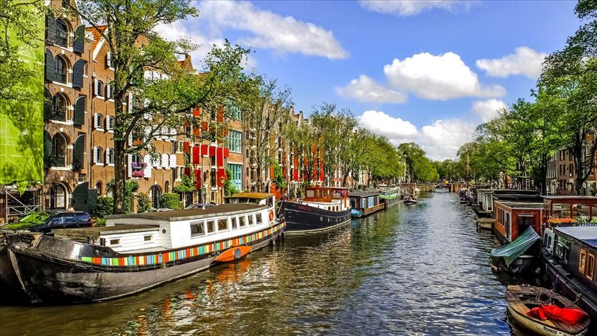
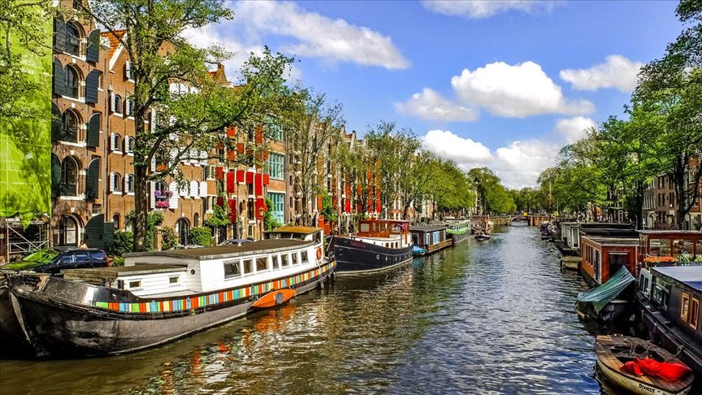

Our Branches

Our Branches

Netherlands
Sweden
Finland
Our Vision
Empowering Connectivity
At the core of our vision is the belief in the transformative power of connectivity. We strive to create mobile applications that seamlessly bridge gaps, bringing people closer together and fostering a sense of unity across borders.
Cutting-Edge Solutions
Kaan Company is dedicated to pushing the boundaries of what is possible. Our commitment to delivering cutting-edge solutions drives us to explore emerging technologies and incorporate them into our mobile app development process. We aim not just to keep up with trends but to set them.
User-Centric Design
Understanding that every app user is unique, we prioritize user-centric design principles. Our goal is to craft applications that not only meet but exceed user expectations, ensuring a delightful and intuitive experience that resonates globally.
Social and Environmental Responsibility
Beyond innovation, Kaan Company is committed to social and environmental responsibility. We envision a world where technology contributes positively to society and minimizes its ecological footprint. Sustainability is embedded in our practices, from development to deployment.
Global Footprint, Local Impact
With branches in Sweden, the Netherlands, and Finland, we embrace diversity and cherish local insights. Our global footprint allows us to leverage a rich tapestry of perspectives, enabling us to create applications that are not only technically robust but culturally resonant.
Continuous Learning and Growth
The tech landscape is dynamic, and at Kaan Company, we thrive on continuous learning. Our team of experts is dedicated to staying at the forefront of industry trends, ensuring that our clients receive solutions that are not just current but forward-looking.
Collaborative Excellence
Collaboration is at the heart of our success. We believe in fostering an environment where creativity flourishes through teamwork. Kaan Company encourages a culture of open communication and idea-sharing, propelling us towards excellence in every project we undertake.
In summary, at Kaan Company, our vision extends beyond mere app development. We envision a world where technology serves as a catalyst for positive change, connectivity knows no bounds, and innovation becomes a constant. Join us on this exciting journey as we continue to redefine the landscape of mobile application development, one groundbreaking solution at a time.